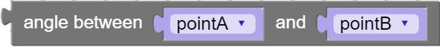

Methods
-
point_create(x, y)
-
Returns a point from the given x/y values.
Check out the third party documentation for a more in depth explanation.Parameters:
Name Type Description xNumber x value for the point
yNumber y value for the point
Code Equivalent:
new Phaser.Point(x, y) -
point_get_element(element, point)
-
Returns the x or y value of the point.
Check out the third party documentation for a more in depth explanation.Parameters:
Name Type Description elementwhich value to return
pointpoint to get the value from
Code Equivalent:
point.element -
point_set_element(element, point, value)
-
Assigns the x or y value of the point to a number.
Check out the third party documentation for a more in depth explanation.Parameters:
Name Type Description elementwhich value to set
pointpoint to set the value for
valueNumber value to set the element to
Code Equivalent:
point.element = value; -
point_set_magnitude(point, value)
-
Sets the magnitude of the point to a number.
Check out the third party documentation for a more in depth explanation.Parameters:
Name Type Description pointpoint to set the magnitude for
valueNumber value to set the magnitude to
Code Equivalent:
point.setMagnitude(value); -
points_add(pointA, pointB)
-
Adds the coordinates of two points and returns a new point with the result.
Check out the third party documentation for a more in depth explanation.Parameters:
Name Type Description pointAfirst point to add
pointBsecond point to add
Code Equivalent:
Phaser.Point.add(pointA, pointB) -
points_add_member(point, x, y)
-

Adds the given x and y values to the point.
Check out the third party documentation for a more in depth explanation.Parameters:
Name Type Description pointpoint to add values to
xNumber x value to add to the point
yNumber y value to add to the point
Code Equivalent:
point.add(x, y); -
points_angle_between(pointA, pointB)
-

Calculates the angle between two points and returns the result.
Check out the third party documentation for a more in depth explanation.Parameters:
Name Type Description pointAfirst angle to calculate
pointBsecond angle to calculate
Code Equivalent:
Phaser.Point.angle(pointA, pointB) -
points_ceil(point)
-
Applies Math.ceil() to the x and y values of the point.
Check out the third party documentation for a more in depth explanation.Parameters:
Name Type Description pointpoint to change the values of
Code Equivalent:
point.ceil(); -
points_centroid(array)
-
Returns a new point with the centroid of the list of points.
Check out the third party documentation for a more in depth explanation.Parameters:
Name Type Description arrayArray list of points to calculate the centroid from
Code Equivalent:
Phaser.Point.centroid(array) -
points_clamp(point, min, max)
-
Clamps the point object values to be between the given minimum and maximum.
Check out the third party documentation for a more in depth explanation.Parameters:
Name Type Description pointpoint to clamp
minNumber the minimum value to clamp the point to
maxNumber the maximum value to clamp the point to
Code Equivalent:
point.clamp(min, max); -
points_clamp_x(point, min, max)
-
Clamp the point object x value to be between the given minimum and maximum.
Check out the third party documentation for a more in depth explanation.Parameters:
Name Type Description pointpoint to clamp
minNumber the minimum value to clamp the value to
maxNumber the maximum value to lcmap the value to
Code Equivalent:
point.clampX(min, max); -
points_clamp_y(point, min, max)
-
Clamp the point object y value to be between the given minimum and maximum.
Check out the third party documentation for a more in depth explanation.Parameters:
Name Type Description pointpoint to clamp
minNumber the minimum value to clamp the value to
maxNumber the maximum value to lcmap the value to
Code Equivalent:
point.clampY(min, max); -
points_clone(point)
-

Returns a new point with the same properties as the original point.
Check out the third party documentation for a more in depth explanation.Parameters:
Name Type Description pointpoint to clone
Code Equivalent:
point.clone() -
points_copy_from(source, target)
-
Copies values from one point to another, overwriting the original values.
Check out the third party documentation for a more in depth explanation.Parameters:
Name Type Description sourcepoint to get the values from
targetpoint to copy the values to
Code Equivalent:
target.copyFrom(source); -
points_cross(pointA, pointB)
-
Calculates the cross product of two points and returns the result.
Check out the third party documentation for a more in depth explanation.Parameters:
Name Type Description pointAleft-hand side
pointBright-hand side
Code Equivalent:
pointA.cross(pointB) -
points_distance(pointA, pointB)
-
Calculates the distance between two points and returns the result.
Check out the third party documentation for a more in depth explanation.Parameters:
Name Type Description pointAfirst angle to calculate
pointBsecond angle to calculate
Code Equivalent:
Phaser.Point.distance(pointA, pointB) -
points_divide(pointA, pointB)
-
Divides the coordinates of two points and returns a new point with the result.
Check out the third party documentation for a more in depth explanation.Parameters:
Name Type Description pointAfirst point to divide
pointBsecond point to divide
Code Equivalent:
Phaser.Point.divide(pointA, pointB) -
points_divide_member(point, x, y)
-
Divides the point values by the given x and y values.
Check out the third party documentation for a more in depth explanation.Parameters:
Name Type Description pointpoint to divide
xNumber x value to divide the point by
yNumber y value to divide the point by
Code Equivalent:
point.divide(x, y); -
points_dot(pointA, pointB)
-
Calculates the dot product of two points and returns the result.
Check out the third party documentation for a more in depth explanation.Parameters:
Name Type Description pointAleft-hand side
pointBright-hand side
Code Equivalent:
pointA.dot(pointB) -
points_equals(pointA, pointB)
-
Returns true/false if one point has the same x/y values as another.
Check out the third party documentation for a more in depth explanation.Parameters:
Name Type Description pointAfirst point to check
pointBsecond point to check
Code Equivalent:
Phaser.Point.equals(pointA, pointB) -
points_floor(point)
-
Applies Math.floor() to the x and y values of the point.
Check out the third party documentation for a more in depth explanation.Parameters:
Name Type Description pointpoint to change the values of
Code Equivalent:
point.floor(); -
points_get_magnitude(point)
-

Returns the length of the point object.
Check out the third party documentation for a more in depth explanation.Parameters:
Name Type Description pointpoint to get the magnitude of
Code Equivalent:
point.getMagnitude() -
points_get_magnitude_squared(point)
-
Returns the length squared of the point object.
Check out the third party documentation for a more in depth explanation.Parameters:
Name Type Description pointpoint to get the magnitude squared of
Code Equivalent:
point.getMagnitudeSq() -
points_interpolate(pointA, pointB, f)
-
Interpolates the two points based on the percent value between 0 and 1.
Check out the third party documentation for a more in depth explanation.Parameters:
Name Type Description pointAfirst point
pointBsecond point
fNumber the level of interpolation between the two points
Code Equivalent:
Phaser.Point.interpolate(pointA, pointB, f) -
points_invert(point)
-
Inverts the x and y values of the point.
Check out the third party documentation for a more in depth explanation.Parameters:
Name Type Description pointpoint to invert
Code Equivalent:
point.invert(); -
points_is_zero(point)
-

Returns true/false if the point has the values 0,0.
Check out the third party documentation for a more in depth explanation.Parameters:
Name Type Description pointpoint to check
Code Equivalent:
point.isZero() -
points_limit(point, max)
-
Alters the point so it's magnitude is no more than the given maximum value.
Check out the third party documentation for a more in depth explanation.Parameters:
Name Type Description pointpoint to change
maxNumber the value to set the maximum to
Code Equivalent:
point.limit(max); -
points_multiply(pointA, pointB)
-
Multiplies the coordinates of two points and returns a new point with the result.
Check out the third party documentation for a more in depth explanation.Parameters:
Name Type Description pointAfirst point to multiply
pointBsecond point to multiply
Code Equivalent:
Phaser.Point.multiply(pointA, pointB) -
points_multiply_member(point, x, y)
-
Multiplies the point values by the given x and y values.
Check out the third party documentation for a more in depth explanation.Parameters:
Name Type Description pointpoint to multiply
xNumber x value to multiply the point by
yNumber y value to multiply the point by
Code Equivalent:
point.multiply(x, y); -
points_negate(pointA)
-
Creates a new point with negative values of the original point.
Check out the third party documentation for a more in depth explanation.Parameters:
Name Type Description pointApoint to get the values from
Code Equivalent:
Phaser.Point.negative(pointA) -
points_normalize(pointA)
-
Returns a new point of the normalized values of the original.
Check out the third party documentation for a more in depth explanation.Parameters:
Name Type Description pointApoint to normalize
Code Equivalent:
Phaser.Point.normalize(pointA) -
points_perpendicular(pointA)
-
Returns a new point with the perpendicular vector to the original point.
Check out the third party documentation for a more in depth explanation.Parameters:
Name Type Description pointApoint to get the vector from
Code Equivalent:
Phaser.Point.perp(pointA) -
points_set_to_polar(point, degrees, radius)
-
Sets the x and y values of hte point based on the given polar coordinate.
Check out the third party documentation for a more in depth explanation.Parameters:
Name Type Description pointpoint to change the values of
degreesNumber degrees of the polar coordinate
radiusNumber radius of the polar coordinate
Code Equivalent:
point.setToPolar(degrees, radius, true); -
points_subtract(pointA, pointB)
-
Subtracts the coordinates of two points and returns a new point with the result.
Check out the third party documentation for a more in depth explanation.Parameters:
Name Type Description pointAfirst point to subtract
pointBsecond point to subtract
Code Equivalent:
Phaser.Point.subtract(pointA, pointB) -
points_subtract_member(point, x, y)
-
Subtracts the given x and y values from the point.
Check out the third party documentation for a more in depth explanation.Parameters:
Name Type Description pointpoint to subtract values from
xNumber x value to subtract from the point
yNumber y value to subtract from the point
Code Equivalent:
point.subtract(x, y);